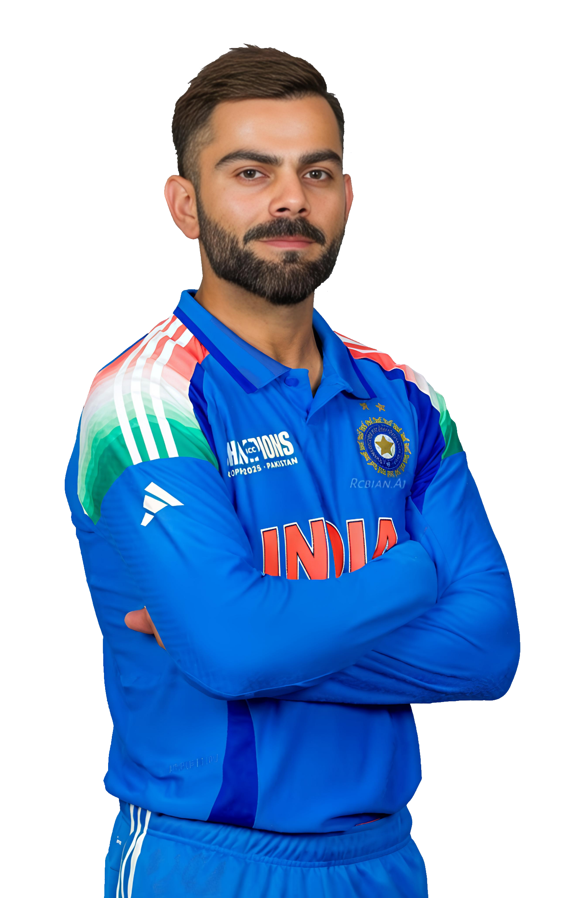

Technique · Batting
The Kohli Cover Drive: A Masterclass in Timing
An in-depth look at how Virat Kohli's cover drive has become one of the most aesthetically perfect shots in modern cricket.

Test Captain · ODI Legend · T20 World Champion
Made his ODI debut against Sri Lanka on 18 August 2008 in Dambulla, aged just 19. Marked the beginning of a legendary international career that would redefine modern batting.
Played a crucial role in India's 2011 ICC Cricket World Cup triumph. Scored the first run of the final chase against Sri Lanka, dedicating the victory to Sachin Tendulkar.
Rose to No. 1 in ICC ODI batting rankings for the first time. Established himself as the most consistent run-scorer in world cricket across all formats.
Took over Test captaincy from MS Dhoni mid-series in Australia. Transformed India into a dominant Test side, winning series in Australia and England for the first time in decades.
Became the fastest batsman ever to reach 10,000 ODI runs in just 205 innings, surpassing Sachin Tendulkar's record of 259 innings.
Played a defining knock of 76 runs in the T20 World Cup final against South Africa in Barbados, helping India lift the trophy after 17 years.
Virat Kohli was a key player in India’s ICC Champions Trophy 2025 win, scoring consistently and delivering crucial performances in important matches, making him one of the standout players of the tournament.
| Format | Mat | Inn | Runs | HS | Avg | 100s | 50s |
|---|---|---|---|---|---|---|---|
| Test | 121 | 210 | 9230 | 254* | 48.84 | 30 | 31 |
| ODI | 295 | 280 | 13906 | 183 | 58.19 | 50 | 72 |
| T20I | 125 | 111 | 4188 | 122* | 52.65 | 1 | 38 |
| Season Range | Mat | Inn | Runs | HS | Avg | 100s | 50s |
|---|---|---|---|---|---|---|---|
| 2008 – 2016 (Peak Era) | 130 | 128 | 5412 | 113 | 47.9 | 5 | 38 |
| 2016 Season (Record) | 16 | 16 | 973 | 113 | 81.08 | 4 | 7 |
Won the award multiple times — 2012, 2017, 2018 — the most in history for a single player.
Received India's highest sporting honour for outstanding achievement in cricket in 2013.
Awarded India's most prestigious sports recognition in 2018 for extraordinary achievement in cricket.
Conferred with India's fourth-highest civilian honour in 2017 for exceptional contribution to sport.
ICC Cricketer of the Year 2017 & 2018 — the only player to win back-to-back in the award's history.
Joined Sachin Tendulkar as only the second batsman ever to reach 50 ODI centuries.
Held the No. 1 ICC Test batting ranking continuously for over 1,500 days — longest uninterrupted reign.
Delivered the match-winning knock in the final, ending India's 17-year ICC T20 World Cup drought.
Self-belief and hard work will always earn you success.
On Success & MindsetI don't have to prove anything to anyone. I only have to prove it to myself.
On Personal DriveI used to be very reactive. But I've changed. I've learned to stay calm under pressure — that's what separates the great from the good.
On Mental StrengthPlaying for India is the biggest privilege. Every time I wear that blue jersey, I feel the weight and the honour of 1.4 billion people.
On Representing IndiaFitness is not a luxury. It's a necessity. Your body is your greatest tool — take care of it.
On Fitness & DisciplineConsistency is the true mark of a great player. Anyone can have a good day — true champions show up every single time.
On ConsistencyAn in-depth look at how Virat Kohli's cover drive has become one of the most aesthetically perfect shots in modern cricket.
From late-night biryani to a plant-based diet and six-pack abs — how Virat Kohli completely transformed his body and reshaped Team India's fitness culture.
Breaking down the statistical marvel of Kohli's 50 ODI hundreds — when, where, against whom, and under what pressure.
973 runs. 4 centuries. An average of 81. Revisiting the most extraordinary IPL season ever played.
Virat Kohli walked in under enormous pressure in Barbados. 76 runs of pure class that ended 17 years of heartbreak.
How Virat Kohli's aggressive, results-first approach to Test captaincy changed the way India played abroad.